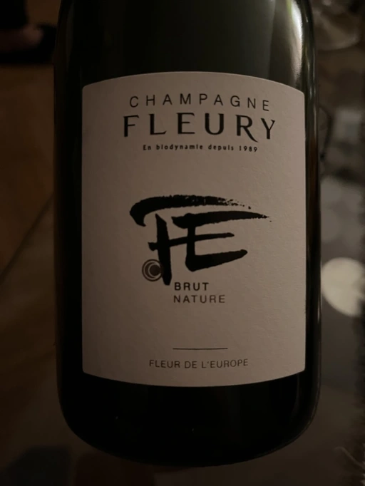
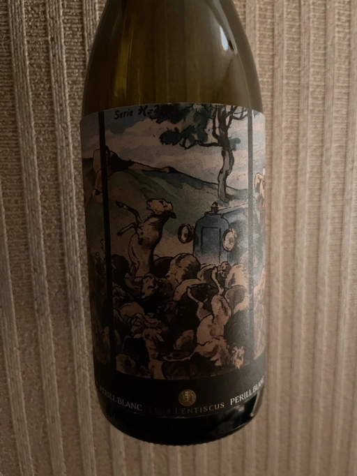
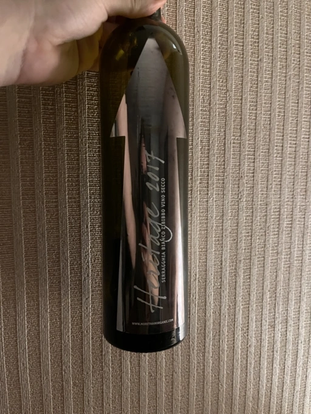
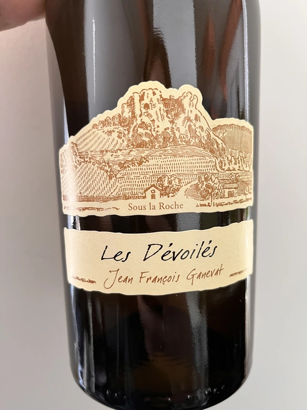
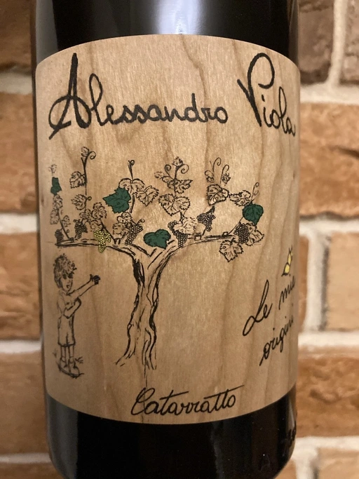

Home Party Vol. 1

Wines:
- Fleury Fleur de L’Europe Brut Nature (2014) NV
- Clos Lentiscus Perill Blanc 2018
- Serragghia Heritage Zibibbo 2017
- Domaine Ganevat Les Dévoilés 2012
- Alessandro Viola Le mie Origini 2019
Scores
| Fleury | Clos Lentiscus | Serragghia | Ganevat | Viola | |
|---|---|---|---|---|---|
| Andrii | 4.30 | 3.80 | 4.70 | 4.80 | 4.10 |
| Viktoriya | 4.00 | 4.20 | 4.50 | 4.80 | 4.30 |
| Elvira | 4.20 | 4.00 | 4.50 | 4.50 | 4.20 |
| Oleksandr | 4.20 | 3.80 | 4.30 | 4.10 | 4.00 |
| Boris | 4.10 | 3.80 | 4.10 | 4.40 | 4.00 |
| amean | sdev | price | QPR | |
|---|---|---|---|---|
| Fleury | 4.16 | 0.0104 | 1836.00 | 1.6681 |
| Clos Lentiscus | 3.92 | 0.0256 | 772.00 | 2.7579 |
| Serragghia | 4.42 | 0.0416 | 3750.00 | 1.2278 |
| Ganevat | 4.52 | 0.0696 | 3704.00 | 1.4595 |
| Viola | 4.12 | 0.0136 | 980.00 | 2.9388 |
How to read this table:
ameanis arithmetic mean (and not ‘amen’), calculated as sum of all scores divided by count of scores for particular wine. It is more useful thantotal, because on some events some wines are not tasted by all participants.sdevis standard deviation. The bigger this value the more controversial the wine is, meaning that people have different opinions on this one.priceis wine price in UAH.QPRis quality price ratio, calculated in as100 * factorial(rms)/price. The reason behind this totally unprofessional formula is simple. At some point you have to pay more and more to get a little fraction of satisfaction. Factorial used in this formula rewards scores close to the upper bound 120 times more than scores close to the lower bound.
Fleury Fleur de L’Europe Brut Nature (2014) NV

- producer: Fleury
- name: Fleur de L’Europe Brut Nature (2014)
- vintage: NV
- base: 2014
- degorgee: October 2020
- sur lie: ~63 months
- grapes: Pinot Noir, Chardonnay
- appellation: Champagne AOC
- location: Champagne, France
- alcohol: 12
- sugar: 0
- price: 1836 UAH
Blend of Pinot Noir (85%) and Chardonnay (15%), where 75% of grapes are harvested in 2014.
Clos Lentiscus Perill Blanc 2018

- producer: Clos Lentiscus
- name: Perill Blanc
- vintage: 2018
- grapes: Xarel-lo
- appellation: Vino de Mesa
- location: Spain
- alcohol: 12.5
- sugar: 0.5
- price: 772 UAH
Serragghia Heritage Zibibbo 2017

- producer: Serragghia
- name: Heritage Zibibbo
- vintage: 2017
- grapes: Zibibbo
- appellation: IGP Terre Siciliane
- location: Sicily, Italy
- alcohol: 13
- sugar: 1
- price: 3750 UAH
Domaine Ganevat Les Dévoilés 2012

- producer: Domaine Ganevat
- name: Les Dévoilés
- vintage: 2012
- grapes: Chardonnay
- appellation: Côtes du Jura AOC
- location: Jura, France
- alcohol: 13.2
- sugar: 1
- price: 3704 UAH
Alessandro Viola Le mie Origini 2019

- producer: Alessandro Viola
- name: Le mie Origini
- vintage: 2019
- grapes: Catarratto
- appellation: IGP Terre Siciliane
- location: Sicily, Italy
- alcohol: 13
- sugar: 1.8
- price: 980 UAH